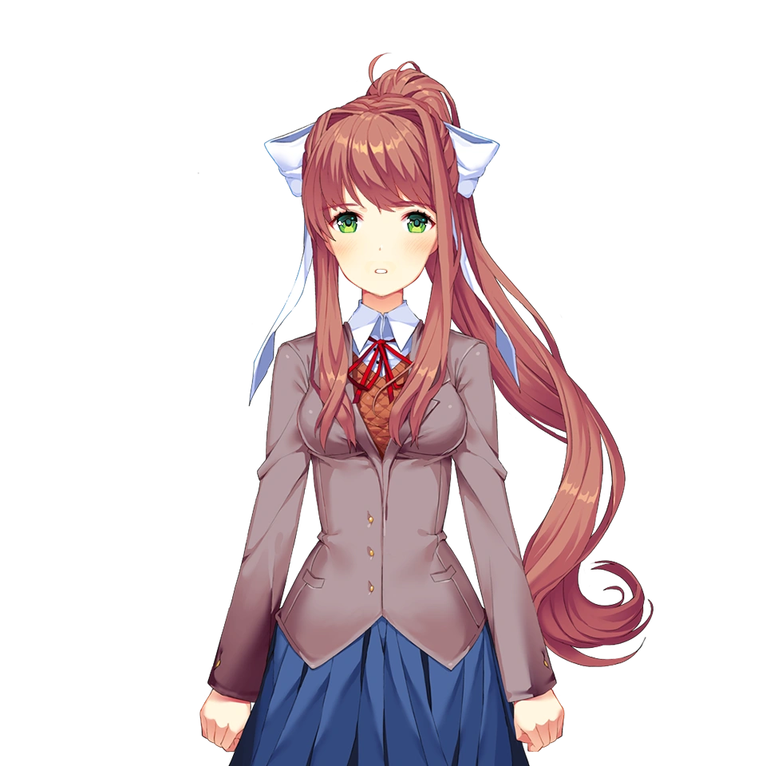
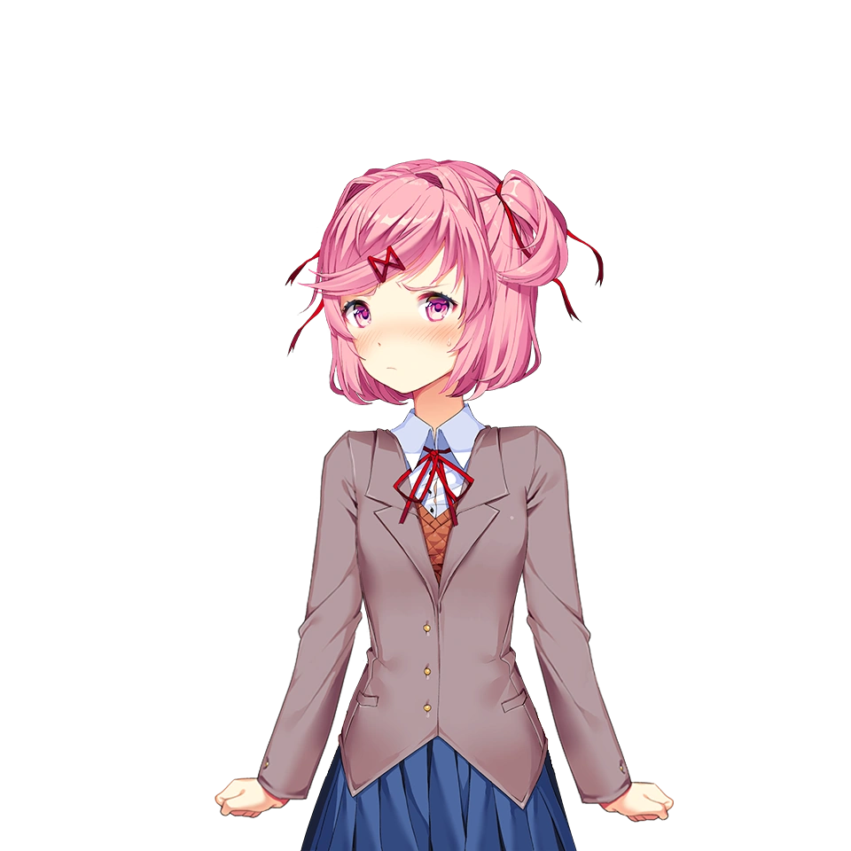
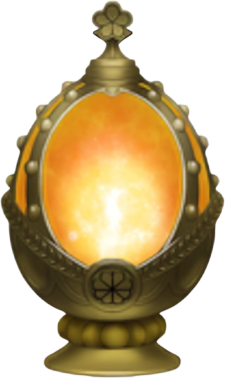

После последней строки
Читаем. Обсуждаем.Сохраняем в памяти.
Enter — начать · мышь / пробел — читать




После последней строки остаётся память.
Эта сборка полностью без звука.
Учебная визуальная новелла по «Реквиему» Анны Ахматовой.